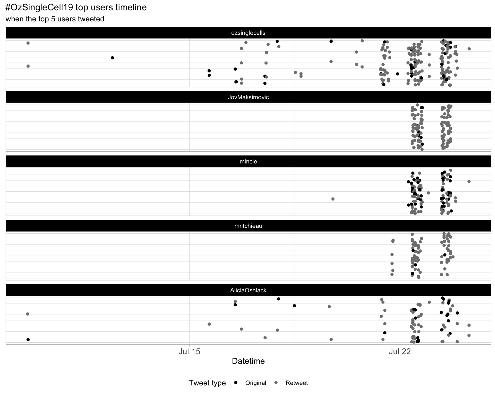
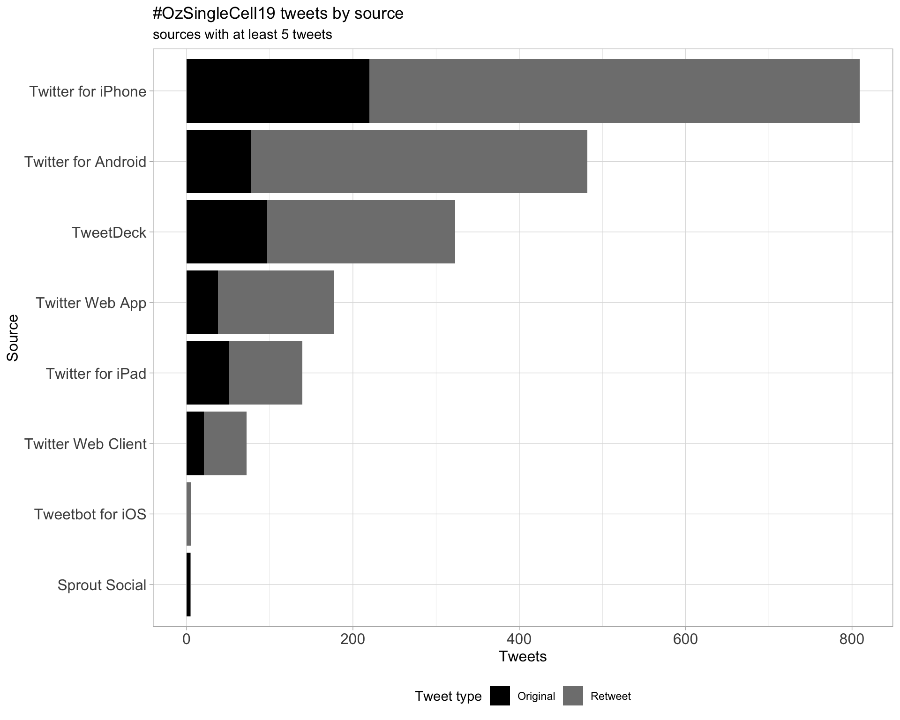
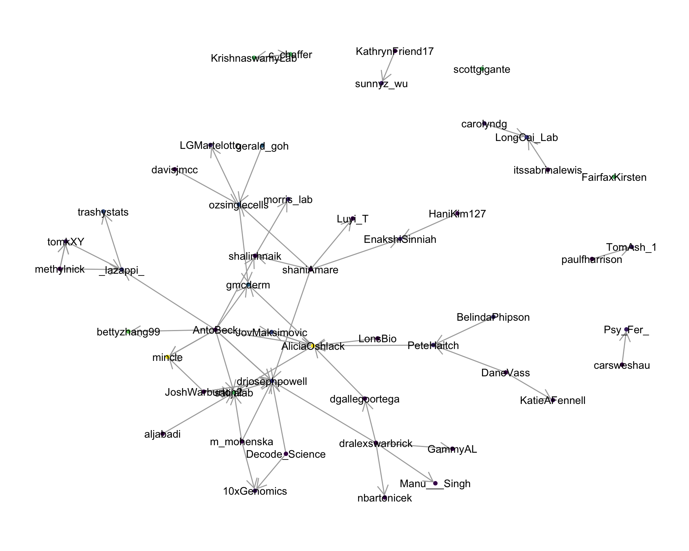

OzSingleCell2019
Oz Single Cell conference 2019
2019-07-18 15:13:20
Parameters
| Parameter | Value |
|---|---|
| hashtag | #OzSingleCell19 |
| start_day | 2019-07-21 |
| end_day | 2019-07-23 |
| timezone | Australia/Melbourne |
| theme | theme_light |
| accent | black |
| accent2 | #7F7F7F |
| kcore | 2 |
| topics_k | 6 |
| bigram_filter | 3 |
| fixed | TRUE |
| seed | 1 |
1 Introduction
An analysis of tweets from the #OzSingleCell19 hashtag for the Oz Single Cell conference 2019. The first day was a workshop and the main conference was day 2 and 3.
A total of 99 tweets from 41 users were collected using the rtweet R package.
2 Timeline
2.1 Tweets by day

2.2 Tweets by day and time
Filtered for dates 2019-07-21 - 2019-07-23 in the Australia/Melbourne timezone.
3 Users
3.1 Top tweeters
Overall

Original

Retweets

3.2 Retweet proportion

3.3 Top tweeters timeline

3.4 Top tweeters by day
Overall
Original
Retweets
4 Sources

5 Networks
5.1 Replies
The “replies network”, composed from users who reply directly to one another, coloured by PageRank.

5.2 Mentions
The “mentions network”, where users mention other users in their tweets. Filtered for a k-core of 2. Node colour and size adjusted according to PageRank score.

6 Tweet types
6.1 Retweets
Proportion

Count

Top 10
| screen_name | text | retweet_count |
|---|---|---|
| ozsinglecells | #ozsinglecell19 is going to be huge! We have 28 talks and 60 posters. You can now upload your posters and talks to our new @F1000Research channel! https://t.co/aZQ5KEP2yY | 15 |
| ozsinglecells |
Check out our program for #ozsinglecell19. Updated already :) https://t.co/RhVC3zx5EK |
9 |
| ManelWatchAU | Great to see the good gender balance at #OzSingleCell19. Congratulations to the organising committee @ozsinglecells @AliciaOshlack @shalinhnaik @drjosephpowell @mincle @Al__Forrest @dralexswarbrick @ryanlisterlab @SciGenderEquity @ScienceAU @WomenSciAUST https://t.co/RgPDq9jhrN | 8 |
| drjosephpowell | You are a keynote speaker at a conference. Do you want a traditional introduction by the session chair? … or your own entrance music as you come up to stage? #ozsinglecell19 | 7 |
| ozsinglecells | Get an early preview of #ozsinglecell19. We already have 3 posters on our @F1000Research channel https://t.co/aZQ5KEP2yY | 5 |
| AliciaOshlack | This is important. As the organisers of 4 conferences this year I think I can do more to increase participation by women #ozsinglecell19 #agta19 #GI2019 #lornegenome https://t.co/tKJ1mSLRgp | 5 |
| Tanya_C8 | Trajectory analysis in latest build of Partek Flow single cell data analysis software , in time for showing at #ozsinglecell19 @Partek_Inc table üï∫üíÉ https://t.co/vprl1PKy8u | 4 |
| Quan_Nguyen_UQ | #OzSingleCell19 is starting THIS Sunday with a brilliant workshop program https://t.co/WoaTZSol97 @ozsinglecells | 3 |
| Tanya_C8 | Getting ready data for live demos with Partek Flow single cell data analysis software @Partek_Inc table at #ozsinglecell19 . Hope there will be time to show this. #ozsinglecell19 has 28 talks and 60 posters over 2 days! https://t.co/j3c9pRfiJb | 2 |
| ozsinglecells | Let us know when you have submitted your poster or talk to the @F1000Research Oz Single Cell channel so we can all admire it! #ozsinglecell19 https://t.co/aZQ5KEP2yY https://t.co/95XfA3wUXV | 2 |
Most retweeted

6.2 Likes
Proportion

Count

Top 10
| screen_name | text | favorite_count |
|---|---|---|
| ozsinglecells | #ozsinglecell19 is going to be huge! We have 28 talks and 60 posters. You can now upload your posters and talks to our new @F1000Research channel! https://t.co/aZQ5KEP2yY | 43 |
| AliciaOshlack | This is important. As the organisers of 4 conferences this year I think I can do more to increase participation by women #ozsinglecell19 #agta19 #GI2019 #lornegenome https://t.co/tKJ1mSLRgp | 29 |
| gmcderm |
Excited about heading to #OzSingleCell19 soon! Hopefully all this time in America hasn’t ruined my accent “Howdy mam, how many ounces of cells did you process to generate these results?” Whoops, I mean “G’day mate, you must have used a bloody shit ton of cells for this study” |
26 |
| ManelWatchAU | Great to see the good gender balance at #OzSingleCell19. Congratulations to the organising committee @ozsinglecells @AliciaOshlack @shalinhnaik @drjosephpowell @mincle @Al__Forrest @dralexswarbrick @ryanlisterlab @SciGenderEquity @ScienceAU @WomenSciAUST https://t.co/RgPDq9jhrN | 22 |
| drjosephpowell | You are a keynote speaker at a conference. Do you want a traditional introduction by the session chair? … or your own entrance music as you come up to stage? #ozsinglecell19 | 19 |
| ozsinglecells |
Check out our program for #ozsinglecell19. Updated already :) https://t.co/RhVC3zx5EK |
17 |
| ozsinglecells | Get an early preview of #ozsinglecell19. We already have 3 posters on our @F1000Research channel https://t.co/aZQ5KEP2yY | 8 |
| AliciaOshlack | This is the only way to do posters IMO. Poster sessions are for chatting and üç∑ #ozsinglecell19 https://t.co/sgJr6AUhNz | 8 |
| AliciaOshlack | @gmcderm Heaps of cells mate, HEAPS! #OzSingleCell19 | 8 |
| LGMartelotto | Who‚Äôs counting the days until #OzSingleCell19? @ozsinglecells üòçüç∑ü§Øüߨüíª https://t.co/H9JPPXpm8V | 8 |
Most likes

6.3 Quotes
Proportion

Count

Top 10
| screen_name | text | quote_count |
|---|---|---|
| ozsinglecells | Let us know when you have submitted your poster or talk to the @F1000Research Oz Single Cell channel so we can all admire it! #ozsinglecell19 https://t.co/aZQ5KEP2yY https://t.co/95XfA3wUXV | 2 |
| AliciaOshlack | This is the only way to do posters IMO. Poster sessions are for chatting and üç∑ #ozsinglecell19 https://t.co/sgJr6AUhNz | 2 |
| AliciaOshlack | This is important. As the organisers of 4 conferences this year I think I can do more to increase participation by women #ozsinglecell19 #agta19 #GI2019 #lornegenome https://t.co/tKJ1mSLRgp | 1 |
| ManelWatchAU | Great to see the good gender balance at #OzSingleCell19. Congratulations to the organising committee @ozsinglecells @AliciaOshlack @shalinhnaik @drjosephpowell @mincle @Al__Forrest @dralexswarbrick @ryanlisterlab @SciGenderEquity @ScienceAU @WomenSciAUST https://t.co/RgPDq9jhrN | 1 |
| Tanya_C8 | 2 more sleeps to #ozsinglecell19 ü¶† ( this is the closest to single cell emoji that I can find) https://t.co/O56qZny1kb | 1 |
| davisjmcc | Thought-provoking thread here. At least #ozsinglecell19 is very much pro-open science! It also has a clear code of conduct and is (as far as one can say) in a safe location https://t.co/7NnqQ8a6fc | 1 |
Most quoted

7 Media
Proportion
Top 10
| screen_name | text | favorite_count |
|---|---|---|
| LGMartelotto | Who‚Äôs counting the days until #OzSingleCell19? @ozsinglecells üòçüç∑ü§Øüߨüíª https://t.co/H9JPPXpm8V | 8 |
| LGMartelotto | #OzSingleCell19 Tech workshop this SUNDAY! Here’s the exciting program! ⁦@UMCCR⁩ ⁦@PeterMacRes⁩ ⁦@VicCompCancerCr⁩ https://t.co/JTbVfFlbOY | 7 |
| Tanya_C8 | Trajectory analysis in latest build of Partek Flow single cell data analysis software , in time for showing at #ozsinglecell19 @Partek_Inc table üï∫üíÉ https://t.co/vprl1PKy8u | 6 |
| Tanya_C8 | Getting ready data for live demos with Partek Flow single cell data analysis software @Partek_Inc table at #ozsinglecell19 . Hope there will be time to show this. #ozsinglecell19 has 28 talks and 60 posters over 2 days! https://t.co/j3c9pRfiJb | 4 |
| MGI_BGI | MGI, a subsidiary of BGI Group, will showcase our innovative single cell RNA sequencing solution at the #OzSingleCell19 conference July 22-23 in Melbourne. Don’t miss the chance to meet us at the BGI/MGI exhibition area. #MGI #BGI #singlecell #sequencing #RNAseq https://t.co/kC8maZBjrJ | 4 |
| Tanya_C8 | Filter out low-quality cells (doublets, cells damaged during cell isolation, or cells with too few reads) is important in single cell data analysis. Take a look on how to use these interactive filters in Partek Flow @Partek_Inc table at #ozsinglecell19 https://t.co/sdaWyZmnjR | 1 |
7.1 Most liked image

8 Tweet text
8.1 Word cloud
The top 100 words used 3 or more times.

8.2 Bigram graph
Words that were tweeted next to each other at least 3 times.

8.3 Topic modelling
Top 10 words associated with 6 topics identified by LDA.
8.3.1 Representative tweets
Most representative tweets for each topic
Topic 1
| screen_name | text | gamma |
|---|---|---|
| MGI_BGI | MGI, a subsidiary of BGI Group, will showcase our innovative single cell RNA sequencing solution at the #OzSingleCell19 conference July 22-23 in Melbourne. Don’t miss the chance to meet us at the BGI/MGI exhibition area. #MGI #BGI #singlecell #sequencing #RNAseq https://t.co/kC8maZBjrJ | 0.9979708 |
| gmcderm |
Excited about heading to #OzSingleCell19 soon! Hopefully all this time in America hasn’t ruined my accent “Howdy mam, how many ounces of cells did you process to generate these results?” Whoops, I mean “G’day mate, you must have used a bloody shit ton of cells for this study” |
0.9975854 |
| AliciaOshlack | @gmcderm Heaps of cells mate, HEAPS! #OzSingleCell19 | 0.9874775 |
Topic 2
| screen_name | text | gamma |
|---|---|---|
| drjosephpowell | You are a keynote speaker at a conference. Do you want a traditional introduction by the session chair? … or your own entrance music as you come up to stage? #ozsinglecell19 | 0.9949454 |
| ozsinglecells | #ozsinglecell19 is going to be huge! We have 28 talks and 60 posters. You can now upload your posters and talks to our new @F1000Research channel! https://t.co/aZQ5KEP2yY | 0.9936914 |
| ozsinglecells | @LGMartelotto But you can follow along with the #ozsinglecell19 hashtag and checkout the talks and posters on the F1000 channel | 0.9927979 |
| ozsinglecells | All abstract submissions have been notified. Please let us know if you will not be presenting or you didn’t receive the email #ozsinglecell19 | 0.9916097 |
| AliciaOshlack | @satijalab @ozsinglecells @davisjmcc I’d like Madonna, Davis. Second talk of the conference #ozsinglecell19 | 0.9916097 |
| shalinhnaik | @morris_lab You inspired us to get a wriggle on, and we’ll have a policy and protocol at #ozsinglecell19 | 0.9899518 |
| ozsinglecells | Get an early preview of #ozsinglecell19. We already have 3 posters on our @F1000Research channel https://t.co/aZQ5KEP2yY | 0.9874775 |
Topic 3
| screen_name | text | gamma |
|---|---|---|
| Tanya_C8 | Getting ready data for live demos with Partek Flow single cell data analysis software @Partek_Inc table at #ozsinglecell19 . Hope there will be time to show this. #ozsinglecell19 has 28 talks and 60 posters over 2 days! https://t.co/j3c9pRfiJb | 0.9971843 |
| Tanya_C8 | Trajectory analysis in latest build of Partek Flow single cell data analysis software , in time for showing at #ozsinglecell19 @Partek_Inc table üï∫üíÉ https://t.co/vprl1PKy8u | 0.9961064 |
| davisjmcc | Thought-provoking thread here. At least #ozsinglecell19 is very much pro-open science! It also has a clear code of conduct and is (as far as one can say) in a safe location https://t.co/7NnqQ8a6fc | 0.9943876 |
| LGMartelotto | Who‚Äôs counting the days until #OzSingleCell19? @ozsinglecells üòçüç∑ü§Øüߨüíª https://t.co/H9JPPXpm8V | 0.9874775 |
Topic 4
| screen_name | text | gamma |
|---|---|---|
| gmcderm | Was so excited to be heading back home to attend #OzSingleCell19 that I accidently ate a bunch of airport sushi right before jumping on my 15 hour flight….. | 0.9957836 |
| ManelWatchAU | Great to see the good gender balance at #OzSingleCell19. Congratulations to the organising committee @ozsinglecells @AliciaOshlack @shalinhnaik @drjosephpowell @mincle @Al__Forrest @dralexswarbrick @ryanlisterlab @SciGenderEquity @ScienceAU @WomenSciAUST https://t.co/RgPDq9jhrN | 0.9954024 |
| AliciaOshlack | This is the only way to do posters IMO. Poster sessions are for chatting and üç∑ #ozsinglecell19 https://t.co/sgJr6AUhNz | 0.9916097 |
Topic 5
| screen_name | text | gamma |
|---|---|---|
| drjosephpowell | @satijalab @davisjmcc Maybe not this year…. but we can try and make it happen for you… let me know your ’get ready for some f*ucking awesome science’ top tracks. The default is GZA liquid swords! #ozsinglecell19 @ozsinglecells | 0.9957836 |
| LGMartelotto | #OzSingleCell19 Tech workshop this SUNDAY! Here’s the exciting program! ⁦@UMCCR⁩ ⁦@PeterMacRes⁩ ⁦@VicCompCancerCr⁩ https://t.co/JTbVfFlbOY | 0.9949454 |
| AliciaOshlack | This is important. As the organisers of 4 conferences this year I think I can do more to increase participation by women #ozsinglecell19 #agta19 #GI2019 #lornegenome https://t.co/tKJ1mSLRgp | 0.9943876 |
| ozsinglecells |
@gmcderm @10xGenomics Updated program now available. You still have the 9am session which is looking awesome #ozsinglecell19 https://t.co/RhVC3zx5EK |
0.9927979 |
| Quan_Nguyen_UQ | #OzSingleCell19 is starting THIS Sunday with a brilliant workshop program https://t.co/WoaTZSol97 @ozsinglecells | 0.9916097 |
| ozsinglecells |
Check out our program for #ozsinglecell19. Updated already :) https://t.co/RhVC3zx5EK |
0.9874775 |
Topic 6
| screen_name | text | gamma |
|---|---|---|
| Tanya_C8 | Filter out low-quality cells (doublets, cells damaged during cell isolation, or cells with too few reads) is important in single cell data analysis. Take a look on how to use these interactive filters in Partek Flow @Partek_Inc table at #ozsinglecell19 https://t.co/sdaWyZmnjR | 0.9975854 |
| ozsinglecells | Let us know when you have submitted your poster or talk to the @F1000Research Oz Single Cell channel so we can all admire it! #ozsinglecell19 https://t.co/aZQ5KEP2yY https://t.co/95XfA3wUXV | 0.9949454 |
| davisjmcc | @ozsinglecells Look, I can‚Äôt control what people say, OK? You‚Äôll just have to check out the Oz Single Cell poster channel and decide for yourself üòé #ozsinglecell19 | 0.9943876 |
| Tanya_C8 | 2 more sleeps to #ozsinglecell19 ü¶† ( this is the closest to single cell emoji that I can find) https://t.co/O56qZny1kb | 0.9916097 |
| ozsinglecells | Rumour has it that you have a lovely poster @davisjmcc #ozsinglecell19 | 0.9833866 |
9 Software
Software mentioned in Tweets with links to GitHub, BitBucket, Bioconductor or CRAN.
Session info
## R version 3.6.0 (2019-04-26)
## Platform: x86_64-apple-darwin15.6.0 (64-bit)
## Running under: macOS Sierra 10.12.6
##
## Matrix products: default
## BLAS: /Library/Frameworks/R.framework/Versions/3.6/Resources/lib/libRblas.0.dylib
## LAPACK: /Library/Frameworks/R.framework/Versions/3.6/Resources/lib/libRlapack.dylib
##
## locale:
## [1] en_AU.UTF-8/en_AU.UTF-8/en_AU.UTF-8/C/en_AU.UTF-8/en_AU.UTF-8
##
## attached base packages:
## [1] stats graphics grDevices utils datasets methods base
##
## other attached packages:
## [1] fs_1.3.1 here_0.1 knitr_1.23
## [4] magick_2.0 webshot_0.5.1 viridis_0.5.1
## [7] viridisLite_0.3.0 wordcloud_2.6 RColorBrewer_1.1-2
## [10] ggraph_1.0.2 ggrepel_0.8.1 ggplot2_3.2.0
## [13] topicmodels_0.2-8 tidytext_0.2.1 igraph_1.2.4.1
## [16] stringr_1.4.0 purrr_0.3.2 forcats_0.4.0
## [19] lubridate_1.7.4 tidyr_0.8.3 dplyr_0.8.3
## [22] rtweet_0.6.9
##
## loaded via a namespace (and not attached):
## [1] httr_1.4.0 jsonlite_1.6 assertthat_0.2.1
## [4] askpass_1.1 highr_0.8 stats4_3.6.0
## [7] yaml_2.2.0 slam_0.1-45 pillar_1.4.2
## [10] backports_1.1.4 lattice_0.20-38 glue_1.3.1
## [13] digest_0.6.20 polyclip_1.10-0 colorspace_1.4-1
## [16] htmltools_0.3.6 Matrix_1.2-17 plyr_1.8.4
## [19] tm_0.7-6 pkgconfig_2.0.2 scales_1.0.0
## [22] processx_3.4.0 tweenr_1.0.1 ggforce_0.2.2
## [25] tibble_2.1.3 openssl_1.4 generics_0.0.2
## [28] farver_1.1.0 withr_2.1.2 lazyeval_0.2.2
## [31] cli_1.1.0 NLP_0.2-0 magrittr_1.5
## [34] crayon_1.3.4 evaluate_0.14 ps_1.3.0
## [37] tokenizers_0.2.1 janeaustenr_0.1.5 fansi_0.4.0
## [40] SnowballC_0.6.0 MASS_7.3-51.4 xml2_1.2.0
## [43] tools_3.6.0 munsell_0.5.0 callr_3.3.0
## [46] compiler_3.6.0 rlang_0.4.0.9000 grid_3.6.0
## [49] labeling_0.3 rmarkdown_1.14 gtable_0.3.0
## [52] curl_3.3 reshape2_1.4.3 R6_2.4.0
## [55] gridExtra_2.3 zeallot_0.1.0 utf8_1.1.4
## [58] rprojroot_1.3-2 modeltools_0.2-22 stringi_1.4.3
## [61] parallel_3.6.0 Rcpp_1.0.1 vctrs_0.2.0
## [64] png_0.1-7 tidyselect_0.2.5 xfun_0.8